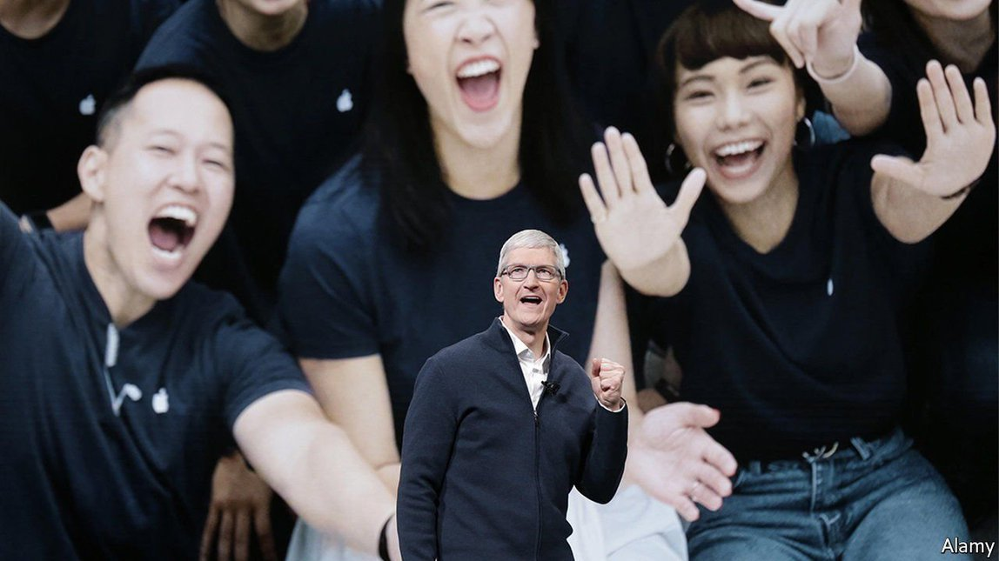
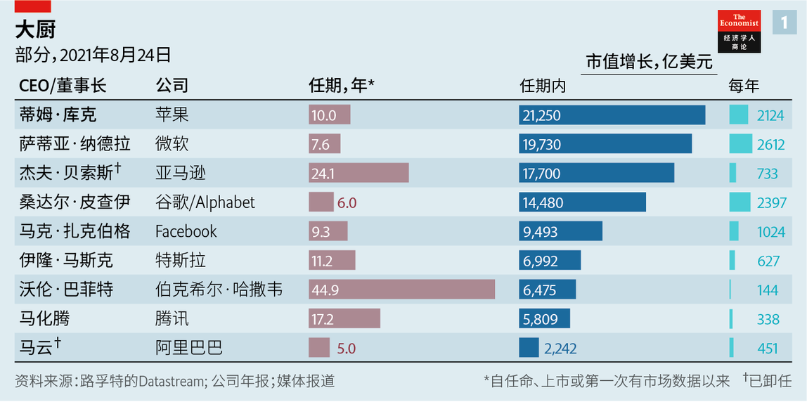
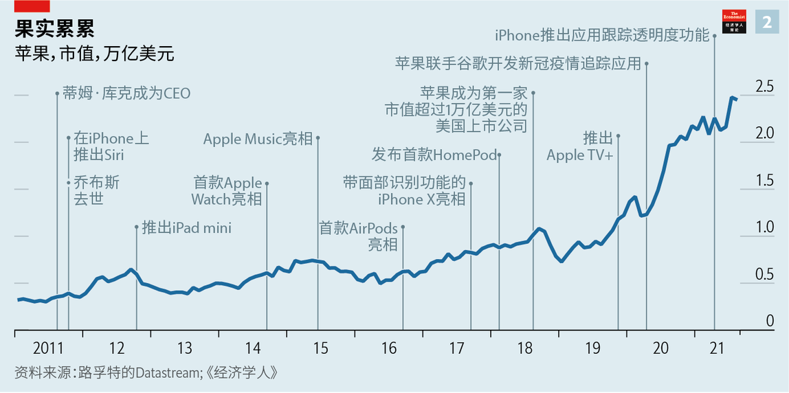
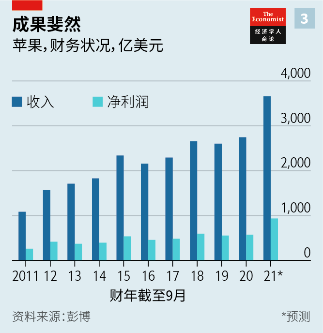
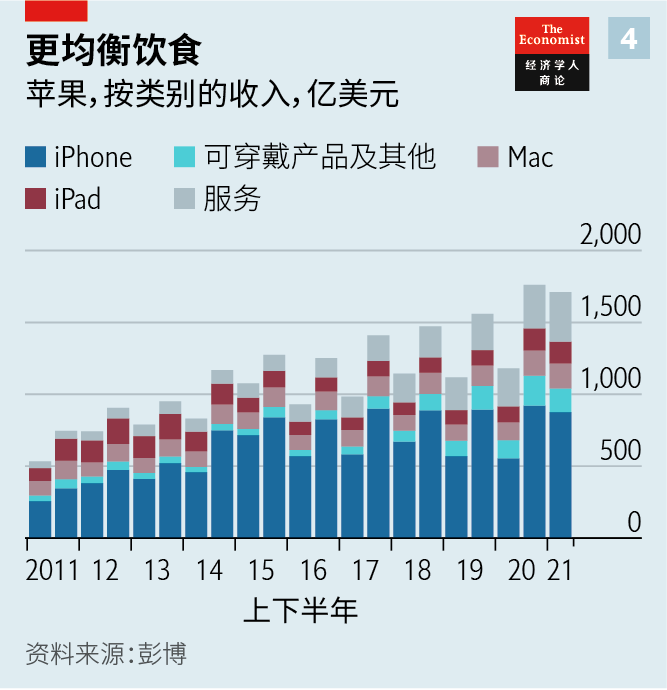
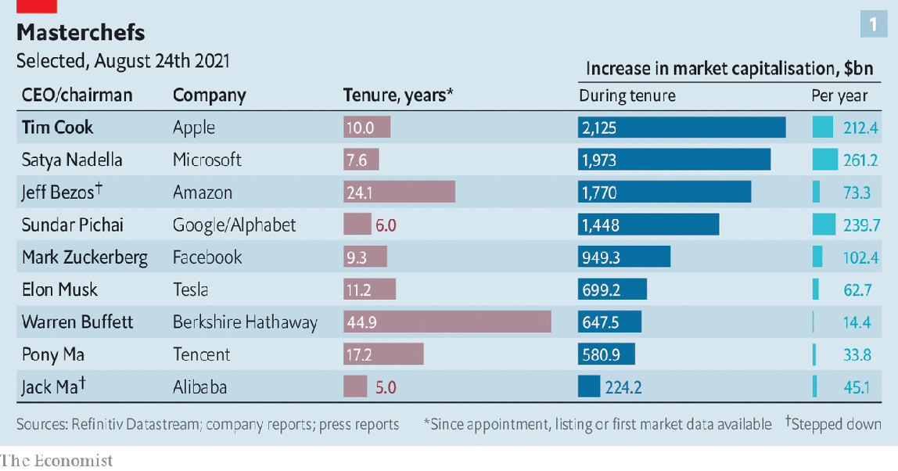
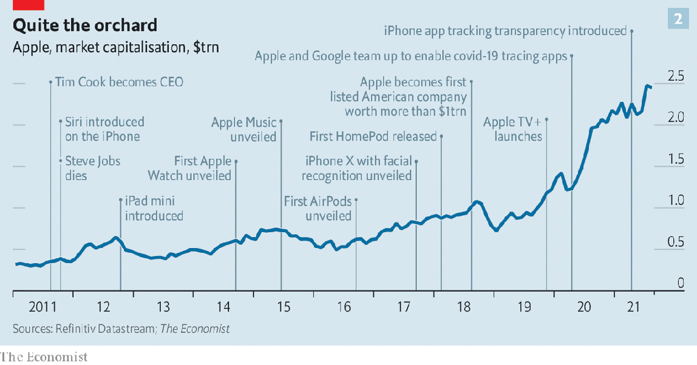
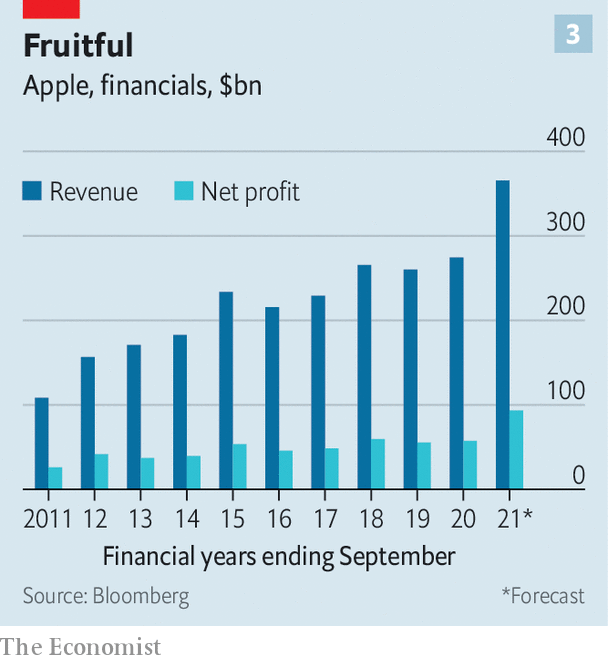
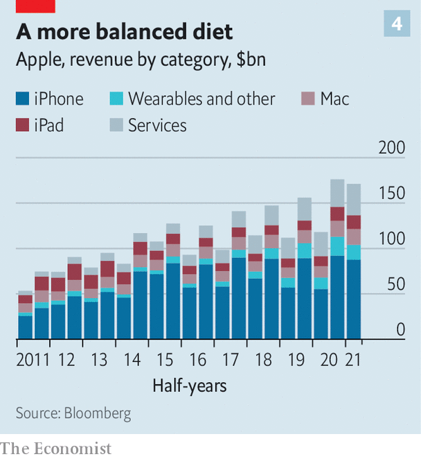

2021-09-13T15:28:56+00:00
伟大继任者的第二幕
苹果过去十年很成功。未来十年显艰难
蒂姆·库克掌舵十周年之际，这家全球市值最高的公司面临全新挑战【深度】
苹果肯定是会掉下来的，即使掉得非常之慢。十年前，当蒂姆·库克从联合创始人乔布斯手中接过公司时，即使“果粉”中最乐观的那群人也担心它注定要跌落。没有了它的威利·旺卡（Willie Wonka），这家数字巧克力工厂即将由一个机器人般的领导来管理，而他的职业成就是组织全球供应链和检查数据表。一个如此缺乏光环的人怎么能够激励苹果员工继续创造——用乔布斯著名的表述来说——“酷毙了”的产品呢？
事实证明库克可以。8月24日，在他担任苹果一把手十周年之际，谁也没有发出一声不满。这是有充分理由的。他可以说是上演了科技界最成功的继任故事，而在这个行业里把创始人的成果搞砸的经理人比比皆是。事实上，纯粹从财务角度来看，作为首席执行官，他要比卸任六周后因胰腺癌离世的乔布斯成功得多。
历史上没有一位首席执行官像库克那样创造了如此高的整体股东价值（见图表1）。他接替乔布斯时，苹果的市值为3490亿美元，如今是2.5万亿美元（见图表 2），为上市公司史上之最。在他的领导下，苹果的年销售额从2011年的1080亿美元飙升至去年的2740亿美元。净利润翻了一番多，达到570亿美元，超过沙特阿美石油公司（Saudi Aramco），成为世界上最赚钱的公司。不那么广为人知的是，在库克任职期间，“苹果经济”（这家公司自己的年营收加上其他公司在其平台上赚取的所有收入）增长了六倍，超过了1万亿美元。
有了这些成就，库克本可以在人们热情洋溢的赞美声中退休（并在亿万富翁俱乐部中占据一席）。但他却很可能至少会干到2025年，到那时他会拿到苹果授予他的全部股票。这继而引出了一个问题：他能让苹果保持在高空轨道上多久。简短的回答就是这要比他第一个十年困难得多。许多把苹果送上了如此令人眩晕的高度的全球东风如今正在转向。
至于更详细的答案，不妨先了解一下库克之前的成功经验。他不仅是一名杰出的经理人，还非常善于利用过去十年里那些推动了科技行业、进而推动了全球经济发展的力量。
第一股力量是由移动通信引领的生活数字化。为了满足全球对移动计算的巨大需求，库克持续推动iPhone手机不断改进。在他成为首席执行官后不久推出的iPhone 4s本质上仍只是一款性能增强的手机，但预计于9月发布的iPhone 13将是一台手持超级计算机，其处理器速度提高了近50倍。就连他接手后推出的主要新产品Apple Watch和AirPods也可以看作是性能强大的iPhone的延伸。目前全球正在使用的苹果手机超过10亿部，每七个地球人就有一部。
库克巧妙利用的另一股力量是全球化，尤其是中国的崛起。在接替乔布斯之前，他就力主将苹果设备的组装外包给中国。苹果最大的代工厂富士康现在在中国雇用了大约100万名员工，其中大多数人负责组装苹果产品，此外还有不计其数的工人受雇于其他组件的供应商。除了将中国用作工厂之外，库克还很早就看到了它的市场潜力，现在中国是苹果在美国和欧洲之外的第三大市场，贡献了19%的收入，利润份额可能还更大。
库克的第三个秘诀是深谙网络效应的重要性——数字市场的这一经济效益机制会让大企业规模愈大。乔布斯都没能想明白这一点，他对iPhone的App Store态度摇摆。相比之下，库克在这个数字“飞轮”上坚定压注——App Store吸引了更多的应用开发者，而更多的应用吸引了更多的用户，进而又吸引了更多开发者，如此循环，直到它成为全球收入最高的数字市场。苹果赞助的一项研究显示，如今Apple Store里有近200万个应用，2020年为应用开发者带来了6430亿美元的销售额。
库克认为像苹果这样规模和影响力的公司必须为自己给广阔世界带来的影响承担一些责任，他也是第一个经常公开做此表态的科技巨头老板。乔布斯掌舵时，一款产品的外观重要过它是如何制造出来的。如今，美国环保署（EPA）前任署长、现任苹果副总裁、直接向库克汇报的丽莎·杰克逊（Lisa Jackson）从产品开发初期就参与其中。苹果为自己设定了一个值得称许的目标，到2030年其所有产品都要实现碳中和。此外，库克称隐私为“一项基本人权”，采取了多项措施予以保护，包括强制要求应用开发者询问用户是否允许广告主跟踪。
诚然，支持保护隐私与苹果的商业模式相吻合。与Facebook和谷歌不同，苹果不通过收集数据以销售定向广告来赚钱。另外，苹果的用户一般较富裕，积极应对气候变化正好契合他们的关注点，而由于苹果的碳足迹相对较浅，这样做成本也不高。这帮助它避开监管机构的盯梢，并使其成为（据一项估计称）世界上最有价值的品牌。
库克的料理经验
换句话说，由库克料理十年后的苹果已经长得更大更好，长期关注苹果的分析师贺拉斯·德迪乌（Horace Dediu）表示。不过，这并不是说它无懈可击。苹果面临着三个突出的挑战：增长、地缘政治和竞争。
从表面上看，苹果的增长足够健康。让多年来一直预测iPhone将衰落的分析师们意外的是，这部机器一直在赚大钱。全球销量虽较2015年的峰值2.31亿部有所下降，但跌幅很小——苹果去年仍售出了2亿部手机。但智能手机市场最终会饱和。而即使这需要时间，苹果也会越来越多地遭遇一个所有大公司都熟悉的问题——公司越大，要快速增长就越难。
库克已经挖掘出了其他收入源头，尼尔·赛巴特（Neil Cybart）指出，他的网站Above Avalon专门分析苹果的方方面面。包括App Store和Apple Music在内的服务业务销售额从2011年的80亿美元飙升至过去一年里的650亿美元（见图4）。尽管Apple Watch等可穿戴设备和AirPods等配件的业务规模比iPhone小，但它们产生了大量收入，截至6月的三个月内收入接近90亿美元。去年，超过2亿只耳朵戴上新购的AirPods，3400万只手腕戴上新购的Apple Watch，分别超过了所有其他高端耳机和所有瑞士手表的销量总和。
然而到了一定时候，苹果将需要另一项堪比iPhone的关键创新。因此据传苹果正在研发“iGlasses”，它将为佩戴者感知到的现实世界添加一个数字层，甚至还要研发“iCar”。尽管苹果未予以证实，但多年来它一直致力于这两方面的研发已是公开的秘密。泄露出来的消息表明增强现实眼镜可能终于要在一两年内问世了，而据报道苹果计划在2024年发布电动无人驾驶汽车。但同样众所周知的是项目进展并不顺利，进度已多次延后。
与眼镜不同，汽车并不是苹果当前的消费科技产品线的自然延伸，实现起来会更困难。即使没有汽油发动机和变速箱，制造汽车也远难于制造智能手机。苹果似乎一直没有确定造车的思路，在从零开始自己打造无人驾驶汽车和向其他汽车制造商提供必要的电子产品和软件之间游移不定。
库克的第二大挑战是地缘政治。到目前为止，苹果避过了西方世界和中国之间日益紧张的局势影响，它的大部分产品都在中国组装，其中很多也在中国销售。库克向北京当局做出了各种让步，包括将中国用户的信息转移到中国的数据中心，让当地执法部门可以访问，以及在中国区App Store里下架某些应用。“无论在哪里开展业务，我们都会遵守当地法律”是库克的座右铭。
不过，现在中国政府正重拳打压本国的科技巨头，这一定让苹果位于硅谷库比蒂诺（Cupertino）那未来范儿的总部里的一些人感到紧张。尽管苹果一直在扩大在其他国家的生产能力，特别是印度和越南，但就其大部分产品组装而言，除了中国别无他选。很难看出它能找到哪个国家来替代中国。只有中国拥有大批随时可上岗的工人来迅速提高最新款iPhone的产量。
从苹果最新的供应商名单来看，它甚至还加大了对中国企业的依赖。前200家供应商有51家在中国，而2018年是42家。在2019年时任总统特朗普掀起的对华贸易战最激烈之际，投资银行高盛估计，在最坏的情况下，中国的报复措施可能会让苹果的利润减少近30%。
苹果的困境
如果苹果的产品和服务在中国被禁，后果可能会更糟。随着共产党日益威权，加上西方对中国的猜疑越来越重，苹果可能会成为北京迁怒的对象，或者成为那类带民族主义色彩的抵制活动的目标——从NBA到Zara的西方品牌都曾因此受创。
而如果苹果对中国经济的重要性让它继续获得保护盾，可能就会激怒西方的政府和消费者。据人权组织称，苹果的一些供应商与新疆据称受压迫的穆斯林少数民族维吾尔人的强迫劳动营有关联。Facebook的老板扎克伯格指责苹果虚伪，因为它在美国国内大谈隐私保护，同时却允许北京政府访问在中国的个人数据。“总有一天会发生点什么事情，考验苹果的忠诚度。”哈佛商学院的史兆威（Willy Shih）认为。
苹果公司表示在其供应链中没有发现任何证据证明存在强迫劳动。而扎克伯格本人也可能被指虚伪之徒，因为Facebook正从它社交网络上的中国广告主那里赚取数十亿美元。但即使这些争议的解决最终有利于苹果，它们也在加剧苹果在美国国内的做法所引发的抵制：看看它计划在iPhone上扫描私人照片以查找儿童色情内容的消息在近期掀起了怎样的轩然大波吧。
从扎克伯格发出的与中国有关的抨击还可以看出库克面临的第三个挑战——竞争。让苹果等公司受益的并不只有网络效应。另一个因素是缺乏真正的竞争对手。一些人将Alphabet（谷歌的母公司）、亚马逊、苹果、Facebook和微软视为一个卡特尔联盟，其成员间心照不宣地互不侵犯核心业务。苹果从未尝试成为社交媒体巨头，Facebook也无意打造另一个应用商店。苹果没有建立自己的搜索引擎，而是与谷歌达成协议，让谷歌成为iPhone上的默认搜索引擎（并且每年就这一特权收取大约80亿至120亿美元的费用，相当于苹果2020年净利润的14%至21%）。
这种友好安逸的局面正逐渐瓦解。为了维持住万亿美元的市值，所有科技巨头都在寻找新的增长来源——结果瞄上了彼此的地盘。让iPhone用户能更多控制自己的数据可能真的是出于保护其隐私的愿望，但同时也让数据脱离了Facebook的掌控，这可能有助于苹果建立自己的广告业务。也有传言称苹果正在开发自己的搜索引擎。
在苹果最重要的硬件业务上，竞争也在升温。在美国，iPhone仍主导市场。然而，据数据供应商Canalys称，在全球范围内，iPhone仅占智能手机销量的七分之一。今年早些时候，中国公司小米出货量超过苹果，成为全球第二大智能手机制造商。
苹果在进军新市场时面临激烈竞争。它的HomePod智能音箱上市较晚，相比亚马逊和谷歌的产品进步不大。苹果的混合现实眼镜如果真能推向市场，将必须和Facebook的Oculus、微软的HoloLens和其他新奇的智能眼镜一较高下。而iCar将面对特斯拉和老牌汽车制造商打造的一大堆车型。
监管机构也可能试图让数字市场加大竞争。苹果预计将赢得与热门网络游戏《堡垒之夜》的开发商Epic Games的官司，后者指控App Store垄断。法院应该会在今年晚些时候做出裁决。然而，即使苹果在美国法庭上胜诉，其他地方的反垄断机构可能也不会轻易放过它。
7月，欧盟委员会副主席兼欧盟反垄断专员玛格丽特·维斯塔格（Margrethe Vestager）警告苹果，欧盟提出的《数字市场法案》（Digital Markets Act）将不允许其以隐私和安全为由在App Store内限制竞争——苹果在Epic诉讼案中正是以此为由来辩护的。放松App Store的规则和降低分成（目前大多数应用的分成最高达30%）可能会严重削弱苹果利润丰厚的服务业务。
对一个结合了库克这般地位和经验的高管来说，要迎着这些逆风而上或许不在话下。此人是否库克本人就不那么清楚了。他今年60岁，已表示过“很可能”不会再干10年。这就引出了一个问题：谁有足够的远见和能力来接替他。
一位前高管提出了一个激进的建议：苹果不应该变成一个奢侈品贩子。他认为，苹果上个季度超过40%的毛利率“高到离谱”，让它变得不思进取。为了维持毛利水平，苹果压榨开发者和供应商。相反，它应该利用自己的影响力和先进技术，为地球上尚未享受到数字时代好处的30亿人开发设备和服务。
太多个库克了？
这可能有助于解决苹果的增长难题，但不太可能获得追求利润的股东们的支持。最常被提及的热门继任人选杰夫·威廉姆斯（Jeff Williams）没那么激进，不会大幅脱离现行轨道。威廉姆斯被许多业内人士认为是“库克手下的库克”，两人不仅长相酷似（瘦高个、头发斑白），想法和经历也都如出一辙。自2010年以来，他一直负责库克原来的工作——管理苹果的供应链和运营。这些类型的技能在过去十年里为这家公司贡献良多。但若要继续繁荣下去，苹果的下一任首席执行官可能需要一套不同的能力。
2021-09-13T15:28:56+00:00
The great successor’s second act
Apple has had a successful decade. The next one looks tougher
As Tim Cook celebrates his tenth anniversary at the helm, the world’s most valuable company faces fresh challenges
THE APPLE will surely fall, even if ever so slowly. When Tim Cook took the helm from Steve Jobs, the firm’s co-founder, a decade ago, even the most boosterish of Apple fanboys worried that the company was destined to decline. Without Apple’s original Willie Wonka, the digital chocolate factory was about to be run by an automaton who made his career organising global supply chains and scrutinising spreadsheets. How could someone with so little dazzle inspire Apple employees to continue creating “insanely great” products, in Jobs’s famous formulation?
It turned out Mr Cook could. As he celebrated his tenth anniversary as Apple’s boss on August 24th, no one made a peep. And for good reason. He has staged what is arguably the greatest succession success in tech, an industry littered with managers who failed in the effort to follow in the founders’ footsteps. In fact, in pure financial terms, he has been a far more successful chief executive than the late Jobs, who succumbed to pancreatic cancer six weeks after stepping down.
No chief executive in history has created as much overall shareholder value as Mr Cook (see chart 1). When he took over from Jobs the company had a market value of $349bn. Today it is worth $2.5trn (see chart 2), more than any other listed firm ever. Under his aegis annual sales surged from $108bn in 2011 to $274bn last year. Net profit more than doubled, to $57bn, overtaking Saudi Aramco’s oil-fuelled earnings and turning Apple into the world’s most profitable company. Less widely noticed, during his tenure the “Apple economy”—its own annual revenue plus everything other companies make on one of its platforms—has grown sevenfold, to more than $1trn.
Given such achievements, Mr Cook could have retired amid gushing tributes around now (and with a spot in the billionaire club). Instead, he is likely to stick around at least until 2025, when his current stock grant will fully vest. This in turn raises the question of how long he can keep Apple on its stratospheric trajectory. The short answer is that it will be much harder than in his first decade. Many of the global tailwinds that have lifted Apple to such dizzying heights are now reversing.
For a longer answer it helps to understand what Mr Cook got so right. Besides being an exceptional manager, he proved adept at harnessing the forces that have powered the tech industry—and with it global economy—in the 2010s.
The first of these was the mobile-led digitisation of life. To satisfy the world’s voracious appetite for mobile computing, he kept pushing for constant improvement of the iPhone. Whereas the iPhone 4s, announced shortly after he became chief executive, was still essentially a souped-up mobile phone, the iPhone 13, expected to be launched in September, will be a hand-sized supercomputer with a processor nearly 50 times faster. Even Apple’s Watch and AirPods, the main new products since he took over, can be seen as extensions of the mighty iPhone. More than a billion of Apple’s smartphones are now in use globally, one for every seven Earthlings.
Another force which Mr Cook has deftly harnessed is globalisation, in particular the rise of China. Even before he took over from Jobs, he was instrumental in outsourcing assembly of Apple’s devices to the country. Its biggest contract manufacturer, Foxconn, now employs about 1m people there. Most of them assemble iGadgets. On top of that, untold numbers work for suppliers of other components. And besides using China as a factory, Mr Cook was early to see its potential as a market—now Apple’s biggest after America and Europe, generating 19% of revenue and, possibly, a bigger share of profits.
Mr Cook’s third coup was understanding the importance of network effects—the economic mechanism in digital markets which makes big businesses even bigger. That is something that eluded even Jobs, who was ambivalent about the iPhone’s App Store. By contrast, Mr Cook doubled down on the digital “flywheel”: the App Store attracted more app makers, which attracted more users, which attracted even more developers and so on—until it became the world’s foremost digital marketplace by revenues. Today it hosts nearly 2m apps, which facilitated $643bn in billings and sales in 2020 for app developers, according to a study sponsored by Apple.
Mr Cook was also the first big-tech boss to signal, loudly and often, that companies of Apple’s size and reach must take some responsibility for their impact on the wider world. Under Jobs, a gadget’s looks were more important than how they were made. Today Lisa Jackson, a former head of America’s Environmental Protection Agency and now a vice-president directly reporting to Mr Cook, is involved in product development from the start. Apple has set itself the laudable goal of becoming carbon-neutral across all its products by 2030. And Mr Cook has called privacy “a fundamental human right” and, among other things, forced app makers to ask users whether they want to be tracked by advertisers.
Admittedly, being pro-privacy aligns with Apple’s business model, which unlike those of Facebook and Google does not make money by collecting data to sell targeted ads, and climate-cuddling plays well with the sensibilities of Apple’s mostly well-off users at little cost, given Apple’s relatively shallow carbon footprint. This has helped keep regulators off Apple’s back—and made it into the world’s most valuable brand, according to one estimate.
Cooking lessons
In other words, after ten years of Cookery Apple is a bigger and better version of itself, says Horace Dediu, a long-time Apple watcher. That, though, is not to say it is invulnerable. Three challenges stand out: growth, geopolitics and competition.
On the surface, growth looks healthy enough. To the surprise of those analysts who have for years predicted the iPhone’s decline, the device keeps raking in money. Global unit sales are down from a peak of 231m in 2015, but only a bit: Apple still sold 200m of them last year. But the market for smartphones will eventually mature. And even if this takes time, Apple will increasingly run up against a problem familiar to all large firms: the bigger they get, the harder it becomes to grow rapidly.
Mr Cook has been able to tap into other sources of revenue, notes Neil Cybart, who runs Above Avalon, a website that analyses all things Apple. The firm’s services business, including the App Store and Apple Music, has surged from $8bn in sales in 2011 to $65bn in the past four quarters (see chart 4). Though wearables like the Apple Watch and accessories such as the AirPods are a smaller business than the iPhone, they generate lots of revenue: nearly $9bn in three months to June. Last year AirPods ended up in more than 200m ears and Apple Watches on 34m wrists, respectively outselling all other high-end ear buds and all Swiss timepieces combined.
At some point, however, Apple will need another keystone innovation like the iPhone. Hence talk of “iGlasses”, which would add a digital layer to the physical reality perceived by the wearer, and even an “iCar”. Although the firm does not confirm this, it is an open secret that it has been working on both for years. Leaks suggest that augmented-reality glasses may finally be coming in the next year or two and Apple reportedly has plans to release a vehicle that is both electric and self-driving in 2024. But it is also widely known that things have not been going well and timelines have slipped in the past.
The car, which unlike the glasses is not a natural extension of Apple’s current consumer-tech line-up, would be difficult to pull off. Even without a petrol engine and a gearbox, a vehicle is much harder to manufacture than a smartphone. Apple’s automotive thinking appears to have gone back and forth between building its own self-driving cars from scratch or providing the necessary electronics and software to other carmakers.
Mr Cook’s second big challenge is geopolitics. Apple has so far escaped the mounting tensions between the West and China, where most of the firm’s products are assembled and many of them are sold. Mr Cook has made all sorts of concessions to the authorities in Beijing, from moving its Chinese users’ information to data centres in the country, where they can be accessed by local law enforcement, to taking down some apps in the Chinese version of its App Store. “We follow the law wherever we do business” is Mr Cook’s motto.
Now, though, the pugnacity with which the Chinese government has gone after its own technology giants must be making some in Apple’s futuristic headquarters in Cupertino, Silicon Valley, nervous. Though it has been beefing up manufacturing in other countries, particularly in India and Vietnam, Apple does not have an alternative to China for the bulk of its assembly. It is hard to see where else it might find one. Only China has a ready army of workers needed to quickly ramp up production of the latest iPhone.
Judging by Apple’s latest supplier list, the firm has even increased its reliance on Chinese companies. Of the top 200 suppliers, 51 were based in China, up from 42 in 2018. At the height of the trade war then-president Donald Trump waged with China in 2019, Goldman Sachs, an investment bank, estimated that in the worst-case scenario Chinese retaliation could reduce Apple’s profits by nearly 30%.
Apple’s jams
The fallout could be worse if Apple’s products and services were banned in China. As the Communist Party turns increasingly authoritarian and the West increasingly suspicious of China, Apple may become a target of Beijing’s wrath or the sort of nationalist-tinged boycotts that have hurt Western brands from the NBA to Zara.
And if Apple’s importance to China’s economy continues to offer a protective shield, this may anger governments and consumers in the West. According to human-rights groups, some of Apple’s suppliers are linked to forced-labour camps for Uyghurs, an oppressed Muslim minority, in Xinjiang. Mark Zuckerberg, Facebook’s boss, has called out Apple for hypocrisy for touting privacy protection at home while allowing the government in Beijing to access personal data in China. “At some point something will happen that becomes a loyalty test,” thinks Willy Shih of Harvard Business School.
Apple says that it has found no evidence of any forced labour in its supply chain. And Mr Zuckerberg himself could also be accused of being hypocritical, since Facebook is making billions from Chinese advertisers on its social networks. But even if those controversies end up being resolved in Apple’s favour, they are feeding into pushback against its behaviour at home: witness the recent brouhaha over its plans to scan private pictures on iPhones for child pornography.
Mr Zuckerberg’s China-related broadsidealso hints at Mr Cook’s third challenge: competition. Network effects are not the only thing benefiting firms like Apple. Another is the lack of real rivals. Some view Alphabet (Google’s parent company), Amazon, Apple, Facebook and Microsoft as a cartel whose members have tacitly agreed not to encroach on each other’s core businesses. Apple has never made an effort to be a social-media powerhouse and Facebook has not attempted to create an alternative app store. Instead of building its own search engine, Apple cut a deal with Google, making it the default search engine on the iPhone (and charging an estimated $8bn-12bn annually for the privilege, equivalent to 14-21% of Apple’s net profit in 2020).
Such cosiness is fraying. To sustain trillion-dollar valuations all the tech giants are searching for new sources of growth—and finding them on one another’s turf. Giving iPhone users more control over their data may be rooted in a genuine wish to protect their privacy, but it also keeps data out of Facebook’s hands, which could help Apple build its own advertising business. Apple is also rumoured to be working on its own search engine.
The rivalry is heating up in its principal hardware business, too. In America the iPhone remains dominant. Globally, however, iPhones account for one in seven smartphones sold, according to Canalys, a data provider. Earlier this year Xiaomi, a Chinese firm, overtook Apple as the world’s second-biggest smartphone-maker by volume.
Apple’s forays into newer markets face stiff competition. Its HomePod smart speakers came late and did not make much headway against Amazon’s and Google’s products. Apple’s mixed-reality glasses, should they indeed see the light of day, will have to duke it out against Facebook’s Oculus, Microsoft’s HoloLens and other fancy headgear. And an iCar would be taking on Teslas and a car park’s worth of offerings from established carmakers.
Regulators may also try to make digital markets more competitive. Apple is expected to win its trial against Epic Games, the maker of “Fortnite”, a popular online video game, which accuses Apple of illegally protecting its App Store. A ruling should come later this year. Even if Apple prevails in American courts, however, trustbusters elsewhere may not let it off the hook as easily.
In July Margrethe Vestager, the European Commission’s deputy head and the EU’s trustbuster-in-chief, warned Apple that the bloc’s proposed Digital Markets Act will not allow it to hold up privacy and security as reasons to limit competition in the App Store, as Apple has argued in the Epic lawsuit. Loosening of the App Store’s rules and lower commissions (currently up to 30% on most app purchases) could make a serious dent in the company’s lucrative services business.
An executive of Mr Cook’s stature and experience may well be able to overcome these headwinds. Whether that will be Mr Cook himself is less clear. He is 60 and has said he will “probably” not stay on for another ten years. This raises the question of who might have the vision and the skills to succeed him.
One former executive has a radical proposal: Apple should stop being a pedlar of luxury goods. The firm’s “obscene” gross margins of more than 40% in the past quarter make it lazy, he argues. To maintain them, the firm squeezes developers and suppliers. Instead, it should use its power and cutting-edge technology to develop devices and services for the 3bn people on Earth who have yet to enjoy the benefits of the digital era.
Too many Cooks?
This could help solve Apple’s growth conundrum. But it is unlikely to fly with its margin-loving shareholders. The possible successor to Mr Cook mentioned most frequently, Jeff Williams, is a less radical departure from the status quo. Mr Williams is considered by many insiders to be “Tim Cook’s Tim Cook”: a doppelganger not just in looks (tall, lean and grizzled) but also in thinking and experience. He has been doing Mr Cook’s old job overseeing Apple’s supply chain and operations since 2010. Those skills have served the company remarkably well in the past decade. To keep thriving Apple’s next chief executive may need a different set of abilities. ■
2021-09-13T15:28:56+00:00
偉大繼任者的第二幕
蘋果過去十年很成功。未來十年顯艱難
蒂姆·庫克掌舵十周年之際，這家全球市值最高的公司面臨全新挑戰【深度】
蘋果肯定是會掉下來的，即使掉得非常之慢。十年前，當蒂姆·庫克從聯合創始人喬布斯手中接過公司時，即使“果粉”中最樂觀的那群人也擔心它註定要跌落。沒有了它的威利·旺卡（Willie Wonka），這家數字巧克力工廠即將由一個機器人般的領導來管理，而他的職業成就是組織全球供應鏈和檢查數據表。一個如此缺乏光環的人怎麼能夠激勵蘋果員工繼續創造——用喬布斯著名的表述來說——“酷斃了”的產品呢？
事實證明庫克可以。8月24日，在他擔任蘋果一把手十周年之際，誰也沒有發出一聲不滿。這是有充分理由的。他可以說是上演了科技界最成功的繼任故事，而在這個行業里把創始人的成果搞砸的經理人比比皆是。事實上，純粹從財務角度來看，作為首席執行官，他要比卸任六周後因胰腺癌離世的喬布斯成功得多。
歷史上沒有一位首席執行官像庫克那樣創造了如此高的整體股東價值（見圖表1）。他接替喬布斯時，蘋果的市值為3490億美元，如今是2.5萬億美元（見圖表 2），為上市公司史上之最。在他的領導下，蘋果的年銷售額從2011年的1080億美元飆升至去年的2740億美元。凈利潤翻了一番多，達到570億美元，超過沙特阿美石油公司（Saudi Aramco），成為世界上最賺錢的公司。不那麼廣為人知的是，在庫克任職期間，“蘋果經濟”（這家公司自己的年營收加上其他公司在其平台上賺取的所有收入）增長了六倍，超過了1萬億美元。
有了這些成就，庫克本可以在人們熱情洋溢的讚美聲中退休（並在億萬富翁俱樂部中佔據一席）。但他卻很可能至少會幹到2025年，到那時他會拿到蘋果授予他的全部股票。這繼而引出了一個問題：他能讓蘋果保持在高空軌道上多久。簡短的回答就是這要比他第一個十年困難得多。許多把蘋果送上了如此令人眩暈的高度的全球東風如今正在轉向。
至於更詳細的答案，不妨先了解一下庫克之前的成功經驗。他不僅是一名傑出的經理人，還非常善於利用過去十年里那些推動了科技行業、進而推動了全球經濟發展的力量。
第一股力量是由移動通信引領的生活數字化。為了滿足全球對移動計算的巨大需求，庫克持續推動iPhone手機不斷改進。在他成為首席執行官後不久推出的iPhone 4s本質上仍只是一款性能增強的手機，但預計於9月發布的iPhone 13將是一台手持超級計算機，其處理器速度提高了近50倍。就連他接手後推出的主要新產品Apple Watch和AirPods也可以看作是性能強大的iPhone的延伸。目前全球正在使用的蘋果手機超過10億部，每七個地球人就有一部。
庫克巧妙利用的另一股力量是全球化，尤其是中國的崛起。在接替喬布斯之前，他就力主將蘋果設備的組裝外包給中國。蘋果最大的代工廠富士康現在在中國僱用了大約100萬名員工，其中大多數人負責組裝蘋果產品，此外還有不計其數的工人受雇於其他組件的供應商。除了將中國用作工廠之外，庫克還很早就看到了它的市場潛力，現在中國是蘋果在美國和歐洲之外的第三大市場，貢獻了19%的收入，利潤份額可能還更大。
庫克的第三個秘訣是深諳網絡效應的重要性——數字市場的這一經濟效益機制會讓大企業規模愈大。喬布斯都沒能想明白這一點，他對iPhone的App Store態度搖擺。相比之下，庫克在這個數字“飛輪”上堅定壓注——App Store吸引了更多的應用開發者，而更多的應用吸引了更多的用戶，進而又吸引了更多開發者，如此循環，直到它成為全球收入最高的數字市場。蘋果贊助的一項研究顯示，如今Apple Store里有近200萬個應用，2020年為應用開發者帶來了6430億美元的銷售額。
庫克認為像蘋果這樣規模和影響力的公司必須為自己給廣闊世界帶來的影響承擔一些責任，他也是第一個經常公開做此表態的科技巨頭老闆。喬布斯掌舵時，一款產品的外觀重要過它是如何製造出來的。如今，美國環保署（EPA）前任署長、現任蘋果副總裁、直接向庫克彙報的麗莎·傑克遜（Lisa Jackson）從產品開發初期就參與其中。蘋果為自己設定了一個值得稱許的目標，到2030年其所有產品都要實現碳中和。此外，庫克稱隱私為“一項基本人權”，採取了多項措施予以保護，包括強制要求應用開發者詢問用戶是否允許廣告主跟蹤。
誠然，支持保護隱私與蘋果的商業模式相吻合。與Facebook和谷歌不同，蘋果不通過收集數據以銷售定向廣告來賺錢。另外，蘋果的用戶一般較富裕，積極應對氣候變化正好契合他們的關注點，而由於蘋果的碳足跡相對較淺，這樣做成本也不高。這幫助它避開監管機構的盯梢，並使其成為（據一項估計稱）世界上最有價值的品牌。
庫克的料理經驗
換句話說，由庫克料理十年後的蘋果已經長得更大更好，長期關注蘋果的分析師賀拉斯·德迪烏（Horace Dediu）表示。不過，這並不是說它無懈可擊。蘋果面臨著三個突出的挑戰：增長、地緣政治和競爭。
從表面上看，蘋果的增長足夠健康。讓多年來一直預測iPhone將衰落的分析師們意外的是，這部機器一直在賺大錢。全球銷量雖較2015年的峰值2.31億部有所下降，但跌幅很小——蘋果去年仍售出了2億部手機。但智能手機市場最終會飽和。而即使這需要時間，蘋果也會越來越多地遭遇一個所有大公司都熟悉的問題——公司越大，要快速增長就越難。
庫克已經挖掘出了其他收入源頭，尼爾·賽巴特（Neil Cybart）指出，他的網站Above Avalon專門分析蘋果的方方面面。包括App Store和Apple Music在內的服務業務銷售額從2011年的80億美元飆升至過去一年裡的650億美元（見圖4）。儘管Apple Watch等可穿戴設備和AirPods等配件的業務規模比iPhone小，但它們產生了大量收入，截至6月的三個月內收入接近90億美元。去年，超過2億隻耳朵戴上新購的AirPods，3400萬隻手腕戴上新購的Apple Watch，分別超過了所有其他高端耳機和所有瑞士手錶的銷量總和。
然而到了一定時候，蘋果將需要另一項堪比iPhone的關鍵創新。因此據傳蘋果正在研發“iGlasses”，它將為佩戴者感知到的現實世界添加一個數字層，甚至還要研發“iCar”。儘管蘋果未予以證實，但多年來它一直致力於這兩方面的研發已是公開的秘密。泄露出來的消息表明增強現實眼鏡可能終於要在一兩年內問世了，而據報道蘋果計劃在2024年發布電動無人駕駛汽車。但同樣眾所周知的是項目進展並不順利，進度已多次延後。
與眼鏡不同，汽車並不是蘋果當前的消費科技產品線的自然延伸，實現起來會更困難。即使沒有汽油發動機和變速箱，製造汽車也遠難於製造智能手機。蘋果似乎一直沒有確定造車的思路，在從零開始自己打造無人駕駛汽車和向其他汽車製造商提供必要的電子產品和軟件之間游移不定。
庫克的第二大挑戰是地緣政治。到目前為止，蘋果避過了西方世界和中國之間日益緊張的局勢影響，它的大部分產品都在中國組裝，其中很多也在中國銷售。庫克向北京當局做出了各種讓步，包括將中國用戶的信息轉移到中國的數據中心，讓當地執法部門可以訪問，以及在中國區App Store里下架某些應用。“無論在哪裡開展業務，我們都會遵守當地法律”是庫克的座右銘。
不過，現在中國政府正重拳打壓本國的科技巨頭，這一定讓蘋果位於硅谷庫比蒂諾（Cupertino）那未來范兒的總部里的一些人感到緊張。儘管蘋果一直在擴大在其他國家的生產能力，特別是印度和越南，但就其大部分產品組裝而言，除了中國別無他選。很難看出它能找到哪個國家來替代中國。只有中國擁有大批隨時可上崗的工人來迅速提高最新款iPhone的產量。
從蘋果最新的供應商名單來看，它甚至還加大了對中國企業的依賴。前200家供應商有51家在中國，而2018年是42家。在2019年時任總統特朗普掀起的對華貿易戰最激烈之際，投資銀行高盛估計，在最壞的情況下，中國的報復措施可能會讓蘋果的利潤減少近30%。
蘋果的困境
如果蘋果的產品和服務在中國被禁，後果可能會更糟。隨着共產黨日益威權，加上西方對中國的猜疑越來越重，蘋果可能會成為北京遷怒的對象，或者成為那類帶民族主義色彩的抵制活動的目標——從NBA到Zara的西方品牌都曾因此受創。
而如果蘋果對中國經濟的重要性讓它繼續獲得保護盾，可能就會激怒西方的政府和消費者。據人權組織稱，蘋果的一些供應商與新疆據稱受壓迫的穆斯林少數民族維吾爾人的強迫勞動營有關聯。Facebook的老闆扎克伯格指責蘋果虛偽，因為它在美國國內大談隱私保護，同時卻允許北京政府訪問在中國的個人數據。“總有一天會發生點什麼事情，考驗蘋果的忠誠度。”哈佛商學院的史兆威（Willy Shih）認為。
蘋果公司表示在其供應鏈中沒有發現任何證據證明存在強迫勞動。而扎克伯格本人也可能被指虛偽之徒，因為Facebook正從它社交網絡上的中國廣告主那裡賺取數十億美元。但即使這些爭議的解決最終有利於蘋果，它們也在加劇蘋果在美國國內的做法所引發的抵制：看看它計劃在iPhone上掃描私人照片以查找兒童色情內容的消息在近期掀起了怎樣的軒然大波吧。
從扎克伯格發出的與中國有關的抨擊還可以看出庫克面臨的第三個挑戰——競爭。讓蘋果等公司受益的並不只有網絡效應。另一個因素是缺乏真正的競爭對手。一些人將Alphabet（谷歌的母公司）、亞馬遜、蘋果、Facebook和微軟視為一個卡特爾聯盟，其成員間心照不宣地互不侵犯核心業務。蘋果從未嘗試成為社交媒體巨頭，Facebook也無意打造另一個應用商店。蘋果沒有建立自己的搜索引擎，而是與谷歌達成協議，讓谷歌成為iPhone上的默認搜索引擎（並且每年就這一特權收取大約80億至120億美元的費用，相當於蘋果2020年凈利潤的14%至21%）。
這種友好安逸的局面正逐漸瓦解。為了維持住萬億美元的市值，所有科技巨頭都在尋找新的增長來源——結果瞄上了彼此的地盤。讓iPhone用戶能更多控制自己的數據可能真的是出於保護其隱私的願望，但同時也讓數據脫離了Facebook的掌控，這可能有助於蘋果建立自己的廣告業務。也有傳言稱蘋果正在開發自己的搜索引擎。
在蘋果最重要的硬件業務上，競爭也在升溫。在美國，iPhone仍主導市場。然而，據數據供應商Canalys稱，在全球範圍內，iPhone僅占智能手機銷量的七分之一。今年早些時候，中國公司小米出貨量超過蘋果，成為全球第二大智能手機製造商。
蘋果在進軍新市場時面臨激烈競爭。它的HomePod智能音箱上市較晚，相比亞馬遜和谷歌的產品進步不大。蘋果的混合現實眼鏡如果真能推向市場，將必須和Facebook的Oculus、微軟的HoloLens和其他新奇的智能眼鏡一較高下。而iCar將面對特斯拉和老牌汽車製造商打造的一大堆車型。
監管機構也可能試圖讓數字市場加大競爭。蘋果預計將贏得與熱門網絡遊戲《堡壘之夜》的開發商Epic Games的官司，後者指控App Store壟斷。法院應該會在今年晚些時候做出裁決。然而，即使蘋果在美國法庭上勝訴，其他地方的反壟斷機構可能也不會輕易放過它。
7月，歐盟委員會副主席兼歐盟反壟斷專員瑪格麗特·維斯塔格（Margrethe Vestager）警告蘋果，歐盟提出的《數字市場法案》（Digital Markets Act）將不允許其以隱私和安全為由在App Store內限制競爭——蘋果在Epic訴訟案中正是以此為由來辯護的。放鬆App Store的規則和降低分成（目前大多數應用的分成最高達30%）可能會嚴重削弱蘋果利潤豐厚的服務業務。
對一個結合了庫克這般地位和經驗的高管來說，要迎着這些逆風而上或許不在話下。此人是否庫克本人就不那麼清楚了。他今年60歲，已表示過“很可能”不會再干10年。這就引出了一個問題：誰有足夠的遠見和能力來接替他。
一位前高管提出了一個激進的建議：蘋果不應該變成一個奢侈品販子。他認為，蘋果上個季度超過40%的毛利率“高到離譜”，讓它變得不思進取。為了維持毛利水平，蘋果壓榨開發者和供應商。相反，它應該利用自己的影響力和先進技術，為地球上尚未享受到數字時代好處的30億人開發設備和服務。
太多個庫克了？
這可能有助於解決蘋果的增長難題，但不太可能獲得追求利潤的股東們的支持。最常被提及的熱門繼任人選傑夫·威廉姆斯（Jeff Williams）沒那麼激進，不會大幅脫離現行軌道。威廉姆斯被許多業內人士認為是“庫克手下的庫克”，兩人不僅長相酷似（瘦高個、頭髮斑白），想法和經歷也都如出一轍。自2010年以來，他一直負責庫克原來的工作——管理蘋果的供應鏈和運營。這些類型的技能在過去十年里為這家公司貢獻良多。但若要繼續繁榮下去，蘋果的下一任首席執行官可能需要一套不同的能力。